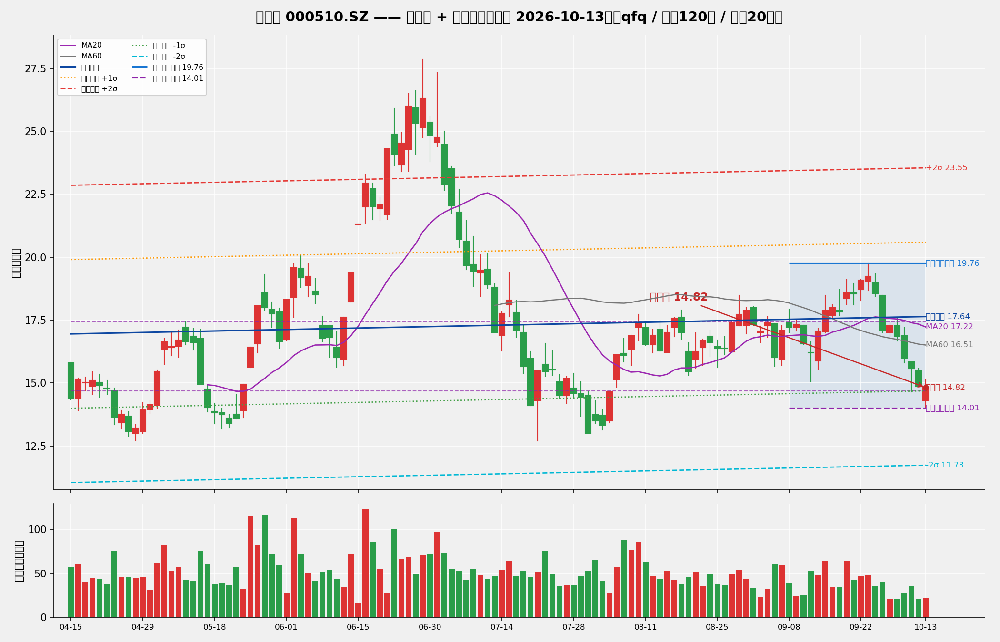

← 全部报告
DrX-新金路箱体回归模拟交易
DrX Quantitative Research · 2026年10月14日 · 每日 17:00 更新
30 万元虚拟资金，基于箱体回归分析的机械化模拟交易。全程记录信号、成交、资金曲线。
一、模拟规则（v2，A股 T+1 适配版）
标的：新金路 (000510.SZ)
信号生成（每日 17:00，基于截至当日收盘的 boxreg 分析 + trade_plan）：
- 动态仓位：上升通道最高 60% / 横向 50% / 下降 25% 或空仓（结合箱体质量）
- Box_Position ≤ 0.25 → BUY（限价=箱体下沿，分两步建仓）
- Box_Position ≥ 0.75 → SELL（三阶分批止盈 3:4:3）
- 当前价跌破硬止损线 → STOP_LOSS（次日开盘无条件平仓）
T+1 分步建仓：
- T 日：试探仓（目标仓位的 60%），限价=箱体下沿
- T+1 日：若 T 日收盘守住硬止损线，加确认仓（目标仓位的 40%）；若跌破，T+1 开盘止损试探仓
成交判定（穿透缓冲 0.01 元）：
- BUY：盘中 Low ≤ 限价 - 0.01 才成交；开盘跳空低开超 1.5% 则撤单
- SELL：盘中 High ≥ 限价 + 0.01 才成交
硬止损：锁定入场箱体下沿 - max(1.0×ATR, 20%箱体高度, 2.5%防毛刺)，持仓期间不随箱体重算漂移。
三阶止盈（3:4:3）：
- TP1 30% @ max(箱体中轴, 回归中轨)，成交后止损上移至保本
- TP2 40% @ 箱体 0.80 分位
- TP3 30% @ min(箱体上沿, +2σ)
费用：佣金万三（最低 5 元）双边；印花税 0.1% 仅卖出。
二、启动分析（2026-10-14）
基于 2026-10-13 收盘数据的 boxreg 分析（已修复箱体破位自适应下移漏洞）：

| 指标 |
数值 |
| 收盘价 (10-13) |
14.82 |
| 箱体上沿 / 下沿 |
18.98 / 15.68 |
| 当前价位置 |
箱体下方（破位） |
| 硬止损线 |
15.02 |
| 回归趋势 |
横向（β=+0.0058/日） |
关键修正：10-13 日最低价 14.01 跌破原箱体下沿。修复前代码会自动把箱体下沿下移至 14.01 并继续提示买入（死锁 bug）；修复后箱体锁定在 15.68–18.98，正确识别为破位，今日不买入、空仓观望。
首日信号：HOLD（破位观望）。等待价格重回箱体或形成新箱体后再行动。
三、每日记录
2026-10-14（收盘）
- 今日行情：开 14.68 / 高 14.97 / 低 14.11 / 收 14.14（-4.59%，昨日收 14.82）
- boxreg（截至今日收盘重算）：箱体 15.05–19.76（中轴 17.41），回归趋势横向（β=+0.0033/日）；Box位置 -0.19，收盘仍在箱体下沿下方 → 破位状态延续
- 昨日信号成交情况：前一日信号为 HOLD，无挂单，今日无成交
- 本次信号：HOLD（破位观望）——trade_plan 判定向下破位，当前无持仓故无止损动作，不开新仓
- 资金：300,000.00 元（现金），持仓 0 股；累计收益 0.00 元（0.00%）
2026-10-15（收盘）
- 今日行情：开 13.37 / 高 13.79 / 低 13.21 / 收 13.30（-5.94%，昨日收 14.14）
- boxreg（截至今日收盘重算）：箱体 15.01–18.98（中轴 17.00）；Box位置 -0.43，收盘仍在箱体下沿下方 → 破位状态延续（箱体下沿锁定有效，未随新低 13.21 自适应下移）
- 昨日信号成交情况：前一日信号为 HOLD（破位观望），无挂单，今日无成交
- 本次信号：HOLD（破位观望）——trade_plan 判定 STOP_LOSS 破位（当前价 13.30 跌破止损线 14.22），但当前无持仓故无止损动作，不开新仓
- 资金：300,000.00 元（现金），持仓 0 股；累计收益 0.00 元（0.00%）
2026-10-16（收盘）
- 今日行情：开 13.68 / 高 14.06 / 低 13.24 / 收 13.32（+0.15%，昨日收 13.30）
- boxreg（截至今日收盘重算）：箱体 14.81–18.98（中轴 16.90）；Box位置 -0.36，收盘仍在箱体下沿下方 → 破位状态延续（箱体下沿锁定有效，未随新低 13.24 自适应下移）
- 昨日信号成交情况：前一日信号为 HOLD（破位观望），无挂单，今日无成交
- 本次信号：HOLD（破位观望）——trade_plan 判定 STOP_LOSS 破位（当前价 13.32 跌破止损线 13.98），但当前无持仓故无止损动作，不开新仓
- 资金：300,000.00 元（现金），持仓 0 股；累计收益 0.00 元（0.00%）
2026-10-19（收盘）
- 今日行情：开 13.13 / 高 13.34 / 低 12.56 / 收 13.12（-1.50%，昨日收 13.32）
- boxreg（截至今日收盘重算）：箱体 14.542–18.98（中轴 16.76）；Box位置 -0.32，收盘仍在箱体下沿下方 → 破位状态延续
- 昨日信号成交情况：前一日信号为 HOLD（破位观望），无挂单，今日无成交
- 本次信号：HOLD（破位观望）——trade_plan 判定 STOP_LOSS 破位（当前价 13.12 跌破止损线 13.65），但当前无持仓故无止损动作，不开新仓
- 资金：300,000.00 元（现金），持仓 0 股；累计收益 0.00 元（0.00%）
2026-10-20（收盘）
- 今日行情：开 13.12 / 高 13.80 / 低 13.03 / 收 13.49（+2.82%，昨日收 13.12）
- boxreg（截至今日收盘重算）：箱体 14.09–18.98（中轴 16.54）；Box位置 -0.12，收盘仍在箱体下沿下方 → 破位状态延续
- 昨日信号成交情况：前一日信号为 HOLD（破位观望），无挂单，今日无成交
- 本次信号：HOLD（破位观望）——trade_plan 判定 STOP_LOSS 破位（当前价 13.49 触及止损线 13.11 一带），但当前无持仓故无止损动作，不开新仓
- 资金：300,000.00 元（现金），持仓 0 股；累计收益 0.00 元（0.00%）
2026-10-21（收盘）
- 今日行情：开 13.52 / 高 13.66 / 低 13.08 / 收 13.19（-2.22%，昨日收 13.49）
- boxreg（截至今日收盘重算）：箱体 13.86–18.98（中轴 16.42）；Box位置 -0.13，收盘仍在箱体下沿下方 → 破位状态延续
- 昨日信号成交情况：前一日信号为 HOLD（破位观望），无挂单，今日无成交
- 本次信号：HOLD（破位观望）——trade_plan 判定 STOP_LOSS 破位（向下破位状态延续），但当前无持仓故无止损动作，不开新仓
- 资金：300,000.00 元（现金），持仓 0 股；累计收益 0.00 元（0.00%）
2026-10-22（收盘）
- 今日行情：开 13.25 / 高 13.33 / 低 12.50 / 收 12.56（-4.78%，昨日收 13.19）
- boxreg（截至今日收盘重算）：箱体 13.23–18.98（中轴 16.11）；Box位置 -0.12，收盘仍在箱体下沿下方 → 破位状态延续
- 昨日信号成交情况：前一日信号为 HOLD（破位观望），无挂单，今日无成交
- 本次信号：HOLD（破位观望）——trade_plan 判定 STOP_LOSS（向下破位状态延续，价格未收回箱体下沿 13.23），但当前无持仓故无止损动作，不开新仓
- 资金：300,000.00 元（现金），持仓 0 股；累计收益 0.00 元（0.00%）
2026-10-23（收盘）
- 今日行情：开 12.12 / 高 12.23 / 低 11.30 / 收 11.84（-5.73%，昨日收 12.56）
- boxreg（截至今日收盘重算）：箱体 13.184–18.98（中轴 16.08）；Box位置 -0.23，收盘仍在箱体下沿下方 → 破位状态延续（箱体下沿锁定有效，未随新低 11.30 自适应下移）
- 昨日信号成交情况：前一日信号为 HOLD（破位观望），无挂单，今日无成交
- 本次信号：HOLD（破位观望）——trade_plan 判定 STOP_LOSS 破位（当前价 11.84 跌破止损线 12.25），但当前无持仓故无止损动作，不开新仓
- 资金：300,000.00 元（现金），持仓 0 股；累计收益 0.00 元（0.00%）
2026-10-26（收盘）
- 今日行情：开 11.60 / 高 11.80 / 低 10.78 / 收 10.98（-7.26%，昨日收 11.84）
- boxreg（截至今日收盘重算）：箱体 13.07–18.98（中轴 16.03）；Box位置 -0.35，收盘仍在箱体下沿下方 → 破位状态延续
- 昨日信号成交情况：前一日信号为 HOLD（破位观望），无挂单，今日无成交
- 本次信号：HOLD（破位观望）——trade_plan 判定 STOP_LOSS 破位（当前价 10.98 跌破止损线 12.11），但当前无持仓故无止损动作，不开新仓
- 资金：300,000.00 元（现金），持仓 0 股；累计收益 0.00 元（0.00%）
2026-10-27（收盘）
- 今日行情：开 11.26 / 高 11.55 / 低 10.61 / 收 10.62（-3.28%，昨日收 10.98）
- boxreg（截至今日收盘重算）：箱体 12.94–18.58（中轴 15.76）；Box位置 -0.41，收盘仍在箱体下沿下方 → 破位状态延续
- 昨日信号成交情况：前一日信号为 HOLD（破位观望），无挂单，今日无成交
- 本次信号：HOLD（破位观望）——trade_plan 判定 STOP_LOSS 破位（当前价 10.62 跌破止损线 11.98），但当前无持仓故无止损动作，不开新仓
- 资金：300,000.00 元（现金），持仓 0 股；累计收益 0.00 元（0.00%）
2026-10-28（收盘）
- 今日行情：开 10.84 / 高 11.09 / 低 10.59 / 收 10.94（+3.01%，昨日收 10.62）
- boxreg（截至今日收盘重算）：箱体 10.61–19.76（中轴 15.19）；Box位置 0.04，收盘位于箱体下沿附近
- 昨日信号成交情况：前一日信号为 HOLD（破位观望），无挂单，今日无成交
- 本次信号：BUY（限价买入）——Box位置 0.04 ≤0.25，次日挂 T0 试探买单 8400 股 @ 10.61（盘中最低 ≤10.60 判定成交；若成交，次日再挂 T1 确认买单 5600 股，硬止损 9.72）
- 资金：300,000.00 元（现金），持仓 0 股；累计收益 0.00 元（0.00%）
本模拟为量化研究记录，不构成投资建议。
发布日期：2026-10-14 · 类型：数据掘金